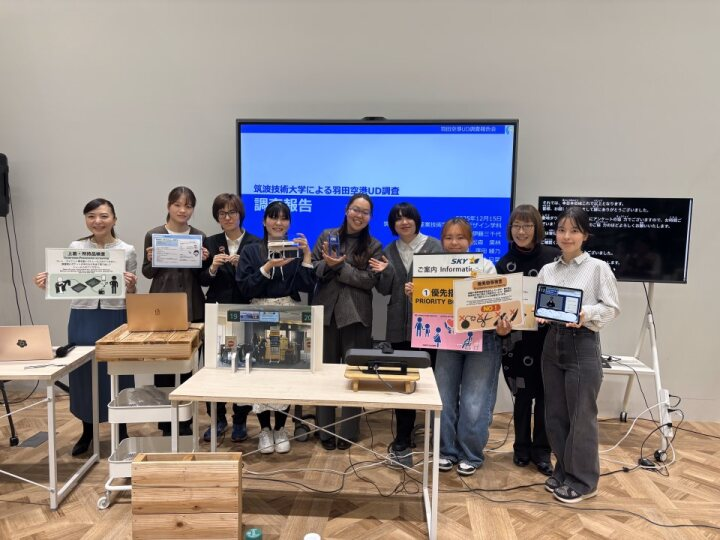

社会を変えるデザイン — 空港UDプロジェクト

取り組みの概要
本調査では、聴覚に障害のある学生が、耳が聞こえない・聞こえにくい利用者の視点に立ち、空港利用時に感じる不安や困りごとについて調査・分析を行いました。学生は実際に施設見学や利用体験を通して課題を整理し、情報保障や案内方法、緊急時対応などに関する改善提案を検討しました。
また、提案内容の資料制作やプレゼンテーションも担当し、実社会の課題に対して調査からデザイン提案までを一貫して実践しました。
- 連携先
- 羽田空港
- 期間
- 2024年7月〜
- 関わった学生の領域
- デザイン系
- 主体教員
- 伊藤三千代 准教授 ほか保健科学部教員
- 学生の関わり方
- 授業（3年生）、卒業研究（4年生）、課外活動として
学生の学びと関わり
学生の学び
問題解決方法とデザイン提案力。学びが実際に社会で役立つ可能性があることを実感できる。
学生の役目
企画、調査への参加、分析・報告書作成、報告会での成果発表、作品制作・提案。
求められた専門性
見てすぐに理解できる情報提示方法（デザイン知識と技術）、誰にとっても使いやすいモノ・仕組みについての設計・デザインの知識と造形力、プレゼンテーション力。
連携先にとっての価値
利用者視点によるUD改善提案。
連携先担当者の評価
学生によるUD調査結果・提案書について「利用者視点に基づいた実現性の高い提案であり、すぐにでも導入したい」と高い評価をいただきました。提出した報告書は社内外での報告や会議資料として活用され、関連企業への共有資料としても役立てられています。提案内容の一部は実際に案内カウンターで改善策として実装されました。さらに、学生制作の手話カレンダーは、羽田空港のほか国内主要空港でも社員教育資料として活用されています。報告会には15社・40名以上の企業関係者が参加し、多くの温かい意見が寄せられました。連携先 ご担当者